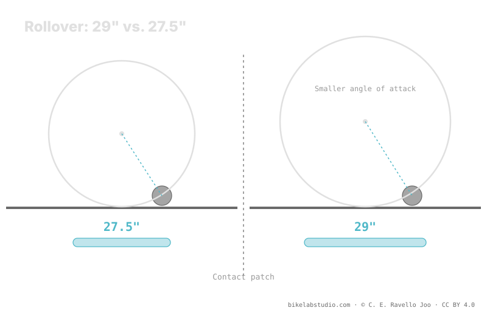

The 27.5" (ETRTO 584) has less air volume and a shorter contact patch than a 29. So, for the same weight and feel, it asks for a bit more pressure — in exchange for being more maneuverable and agile. It's a qualitative tendency, not a fixed PSI: the exact number depends on width, rim, casing and terrain. Pressure is not a number, and the concrete value is closed by the calculator.
"What pressure do I run in my 27.5?" has no chart figure either. The smaller diameter pushes the range up relative to the 29, but it only pushes: it doesn't fix a number. Here's why, without inventing PSI.
Stop guessing: the PSI Pressure Calculator gives you your range (not a number) from weight, width, rim and discipline — with diameter already accounted for. ▶ Open the PSI calculator
A 27.5-inch tire mounts on a rim of ETRTO 584 mm bead-seat diameter — a smaller rim than the 622 of the 29 and larger than the 559 of the 26. That intermediate diameter makes the wheel more agile: less inertia, easier to change direction and thread tight corners. The trade-off is that it rolls over obstacles a bit worse: the angle of attack is more aggressive than on a 29, so the wheel stabs a little more into rocks and roots.

Diameter doesn't hand you a PSI. It hands you a direction: for the same feel, the 27.5 usually sits above the 29. The figure is still closed by the rest of the variables.
At equal width, the 27.5" has less air volume than the 29 because the circumference is smaller. With less air working, it takes a bit more pressure to support the same load without collapsing against the rim on impact. On top of that, the contact patch tends to be shorter, which concentrates the load over less ground. Those two things — less volume and a shorter patch — are what push the 27.5's range up versus a comparable 29.
Diameter is just one variable. A wide 27.5 with a reinforced casing on fast dirt will ask for less pressure than a narrow 27.5 with a light casing on sharp rock. Your system weight, the tire width, the internal rim width, the casing and the terrain combine with diameter. That's why there's no "the 27.5 PSI": there's a range that diameter shifts and the calculator closes.
As a tendency, yes: less volume and less rollover when everything else is equal. How much is decided by the rest — it's a range, not a figure.
Less diameter (584) means less inertia and more agility to turn. In exchange it rolls over obstacles a bit worse and asks for a bit more air.
Not just for being a 27.5. Diameter pushes the range; weight, width, rim and terrain decide where you fall. The calculator closes it.
Not always: a very wide 27.5 can flip it. That's why you compare with the rest fixed — the detail is in 29 vs 27.5.
Diameter gives you the direction; the PSI Pressure Calculator closes your real per-wheel range from weight, width, rim and discipline. ▶ Open the PSI calculator
© 2026 BikeLab Studio. Content under CC BY 4.0: you may copy, translate and publish it, even for commercial purposes. Citation is mandatory. Without attribution, the license terminates automatically (CC BY 4.0, §6.a) and the use becomes copyright infringement: we request the removal of the content and its deindexing. · Design and ownership: Carlos Ravello Joo